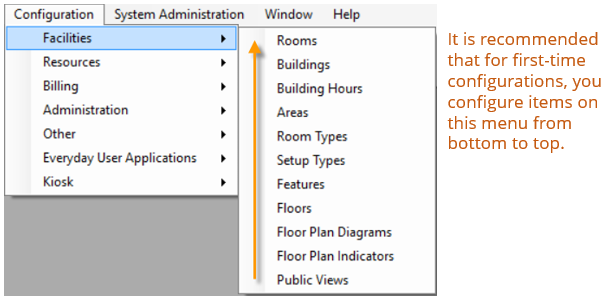

Configuration > Facilities
Before you can use to manage your organization’s events, you must configure core facilities that are specific to your organization. For example, before you can reserve a room, you must first configure the room. This menu is available on the top menu bar under Configuration>Facilities.

* Floor Plan Diagrams and Floor Plan Indicators are optional features used when your organization has the optional add-on, EMS Floorplan.
This section will include information on the following:
-
Configuring Rooms
-
Configuring Buildings
-
Configuring Building Hours
- Configuring Areas
- Configuring Setup Types
- Configuring Room Types
- Configuring Areas
- Configuring Building Hours
- Configuring Building Hours for Multiple Dates: Building Hours Wizard
- Configuring Buildings
- Overview of Configuring Rooms
- Configuring Rooms
- Configuring Multiple Rooms at Once: Room Configuration Wizard
- EMS Terminology: Setup Types Predefine Rooms For Smoother Booking
- Configuring Room Pricing Under Room Configuration
- Exporting Pricing Information for a Room
- Importing Rooms
- What is an Override Room?
- Configuring and Generating Room QR Codes
Note: If your organization has purchased and installed , then you can synchronize data from your Student Information System (SIS) such as your campus buildings, rooms., and room types. As a result, before you carry out any configuration of your facilities data, see EMS Campus Setup Instructions.